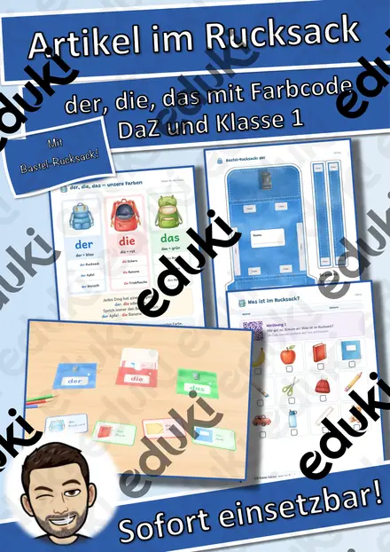
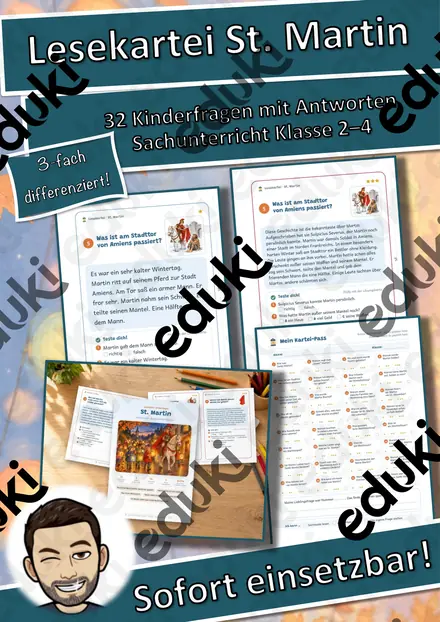
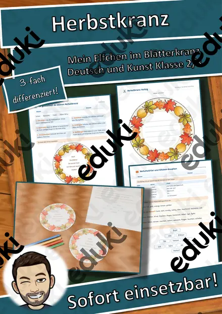
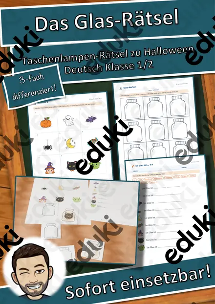
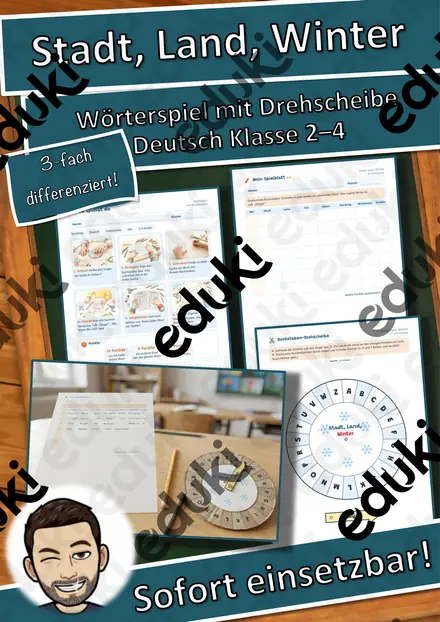
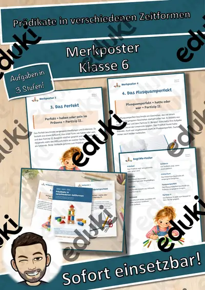

Lesekartei Advent – 32 Kinderfragen mit Antworten in 3 Stufen (Klasse 2–4)
Seit wann gibt es den Adventskranz? Warum hat der Adventskalender 24 Türchen? Was ist ein Schwibbogen? Mit dieser Lesekartei beantworten meine Kinder 32 echte Kinderfragen rund um den Advent – in kurzen, gut verständlichen Sachtexten mit Bild.
Das Besondere: Jede Frage gibt es in 3 Stufen (★ / ★★ / ★★★). Alle Kinder lesen zur gleichen Frage, jedes auf seinem Niveau. Frage, Bild, Text und das Quiz „Teste dich!“ stehen auf einer Karte – kein doppelseitiger Druck nötig. Die Rahmenfarbe zeigt die Stufe, so lassen sich die Sätze leicht sortieren.
Das ist enthalten (59 Seiten):
- 2 Seiten Hinweise für Lehrkräfte: Differenzierung, Ablauf mit Zeitangaben, Vorbereitung, Lernziele, Sachhinweis, Lehrplanbezug
- Übersicht aller 32 Kinderfragen
- 96 Lesekarten: 32 Fragen × 3 Stufen, jede Karte mit eigener Illustration und Quiz (richtig/falsch bzw. Auswahl)
- Themen: Advent, Adventskranz, Adventskalender, Kerzen und kürzester Tag, Barbarazweige, Nikolaustag, Luciatag, Weihnachtsmarkt, Plätzchen, Zimt und Nelken, Lebkuchen, Christstollen, Herrnhuter Stern, Schwibbogen, Räuchermännchen, Nussknacker, Weihnachtsstern, Adventslieder, Wichteln, Chanukka und Gutes tun
- Blanko-Karte „Meine eigene Karte“ für eigene Kinderfragen
- Lösungskarten für alle 3 Stufen zur Selbstkontrolle an der Kontrollstation
- Kartei-Pass zum Abhaken mit „Ich kann …“-Zielen
- Ausmalbild für schnelle Kinder
- Urkunde „Lesekartei-Profi“Religiöse Inhalte sind neutral formuliert („Christen glauben …“, „viele Familien …“), mit Chanukka wird auch ein Lichterfest einer anderen Religion vorgestellt.
Ideal für den Sach- und Deutschunterricht in der Adventszeit, für Freiarbeit, Lesezeit, Stationsarbeit und Vertretungsstunden. Einfach drucken, schneiden, laminieren – los geht's!Die Illustrationen wurden mit KI-Unterstützung erstellt und von mir sorgfältig auf fachliche Richtigkeit geprüft.
Viel Freude mit der Lesekartei!
Snice
Ähnliche Materialien

Artikel im Rucksack: der, die, das mit Farbcode – Bastel-Rucksack, 24 Schulsachen, Hörübungen (DaZ, Klasse 1)

Lesekartei St. Martin – 32 Kinderfragen mit Antworten in 3 Stufen (Klasse 2–4)

Herbstkranz mit Elfchen – Fensterbild gestalten und Herbstgedicht schreiben, 3-fach differenziert (Klasse 2/3)

Halloween Taschenlampen-Rätsel „Was steckt im Glas?“ – Sätze mit ein/eine schreiben, 3-fach differenziert (Klasse 1/2)

Stadt, Land, Winter – Wörterspiel mit Buchstaben-Drehscheibe, 3-fach differenziert (Deutsch Klasse 2–4)

Adjektive-Rechtschreibung Adjektive (auch Homeschooling)

Pommes - Adjektive steigern (auch Homeschooling) Rechtschreibung
